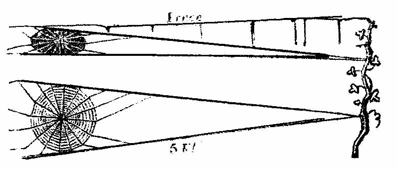
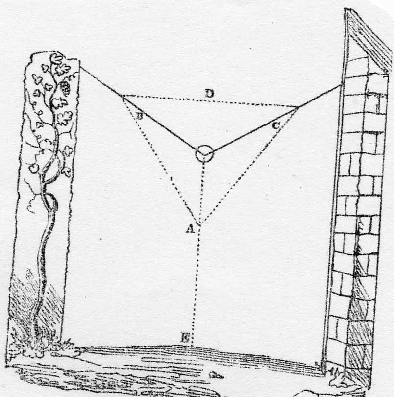

Anecdotes and Observations, Reflections and Critical Remarks *
March 12th, 1801. — About sixteen years ago, a relation (who I think had a daughter) of Daniel de Foe, the author of Crusoe, lived in Broker Row, Moorfields. He was an old man, and kept a small shoemaker's shop, and had done many years; but I am not quite sure that the relationship was on his side; it might be on his wife's.
————
The notices commonly put upon walls, for bill-stickers to read and tremble, are generally worded with a threat of their being prosecuted, &c. I noticed a board affixed to the Tabernacle of G. Whitfield, [1] worded thus — 'Please to take notice, if any Bills are put against this building, they will immediately be taken down.'
————
Providence has a very difficult task to please the creature MAN; the latter neglects his proper avocation, Agriculture, to go in search of black eyes and bloody noses, commonly called military glory, and then blames his Maker for not sending him a proper supply of food. — Publican's Newspaper. [2]
————
I think a small kind of carriage to hold one person might be made to go on the ice with great velocity, if the whole strength of the rider could be exerted for that purpose. By the help of a sharp spike, or a pole with three or more spikes, to strike or lay hold on the ice, a great weight might be put in motion. Perhaps some such childish contrivance as this may be in use, though unknown to me. I should like to try it, and convince myself of its practicability. As to the material point, guiding the carriage, I can conceive no method; I like to see skaiting, and I should like to see this. Such a light thing on wheels might be tried on land; but I doubt the labour would be too much. This nonsense makes me think (as indeed I have always done) what a pleasure it must be, to be able to draw.
————
I never see a fine prospect but I wish to bring it away with me. The house and grounds at Wakefield, I have in the storehouse of memory; but I should like to have them on paper. I should extremely like to have a view of Honington Green, as it was till the Inclosing Act took place. Wakefield I may (though unlikely) see again; but my native Green, with its daisies, I never shall. To take such a small bit of ground and divide it into three, was hardly worth while. What man, with a sack of wheat on his back, would stoop for one grain?
Inclosing Acts! I do not much like the rage for them. They cut down the solemn, the venerable tree, and sometimes plant another, — not always; like a mercenary soldier, who kills more than he begets. Resolved — As shepherds are thus going out of fashion, and smiths, &c., coming in: could I not make the old steeple lament the destruction of shades as old as itself, and make a shepherd reply? &c. &c. But it grows near 'witching time of night,' and I perceive I am writing nonsense. If I had had a critic here at my elbow, he would have found it out long ago.
————
Remarks on the Garden Spider.
August 14, 1801. — This morning observed a garden spider, who had one of his own species in durance, holding him suspended, but without much appearance of a web. The prisoner was alive, but a mere skeleton. After a while he was suffered to fall, or the wind forced him from his captivity; but, in falling, he unfortunately struck against a half-formed web, the architect of which I had just been watching, and observed, that all the lines leading from the centre to the extremities were finished; and he was busy, going a continued circle, and joining each with a fresh web, which he drew from his posteriors, at regular strokes, by an extension of his longest legs behind. The beforementioned prisoner fell against his web, and he immediately left work to secure him, being still alive, and having legs not at all diminished, though his body was wasted. His new conqueror seized him, and, rolling him up in a strong web, dragged him to the centre, and there left him secure, and returned to his work, which he soon completed. I had observed him about a quarter of an hour previous to this adventure, and remarked that he caught a number of very small flies, which abounded on every weed, after much rain in the night; and I was not a little surprised that these minute creatures did not stop his progress, but were instantly devoured; not as I expected, by sucking their bodies dry: he took them up very orderly, and very distinctly, and devoured them, wings and all, without leaving the smallest appearance of a fragment. He had eaten seven of these flies before the spider fell in his way.
August 20, 1801. — A spider of this kind, of an enormous size, has now a web, of about a foot in diameter, hung with spoils, against a wooden fence in the yard. I have repeatedly seen them working their webs, but never could see them begin. The insect, here mentioned, has attached his work on one side to the fence, from which it projects obliquely, and is suspended to a branch of a vine, at the distance of five feet from the circle of the web. As the suspending lines are very strong, and run exactly horizontally, without any intermediate support, it is wonderful to me, to think how they could have been carried so far. A double five foot line, which leaves the fence in this direction, must have been a curious work for him.
In the outline here given, the upper sketch is looking down on the work; the under one is looking horizontally. 
The body of the spider being nearly half an inch in length, he has more than twenty-four times his length in one foot, and, consequently, one hundred and twenty times in his suspending lines. Now, taking the standard of a man at five feet six inches, one hundred and twenty times his length, will be six hundred and sixty feet, or two hundred and twenty yards; about three times the height of the Monument. [3] If we were set to tie the tops of the steeples of London together with a
cord, without scaffolding, should not we be puzzled to contrive it? We should go to school to spiders, and ants, and bees; but of all these — the spider does his work alone.
September 9, 1801. — This morning, extricated a bee from a web, but without any signs of life. Another web contained a bee larger than the common honey bee; he appeared completely enveloped in a winding-sheet of the web, of a very large spider, whose premises he had unfortunately trespassed upon. Thus it is evident that this tiger of an insect devours creatures larger than itself. If the means by which he is enabled to do so were common to the beasts of the forest, how dreadful would be a net spun by the lion or the tiger, from which the horse and his rider could not disentangle themselves, no more than a strong bee can from this pest of the garden.
September 14th, 1801. — Having expressed surprise at the work of a spider, I can now trace with certainty his operations and his power, so as to satisfy myself entirely. Often wondering how came all the long; webs that tickle our noses and glitter in the sun, reaching from one tree to another, and often floating loose in the air; I, a few days past, broke down the web of a garden spider, which was suspended from a building to a fence across a pathway of about five feet, and much the same height from the ground. When his suspending lines were broke, himself and his web fell flat against the building. An hour or two after, I observed him in motion, and wished to know how he would contrive a communication with the fence as before.
He seemed, for a while, as if taking a general survey of the distance and bearings of the objects around; and then letting himself down from a spout to the distance of about six inches, hung suspended, not in their usual position, head downwards, but with one side downwards, and all his legs greatly extended. In this posture I found that, without the help of his legs, he possessed a power of ejecting a web to what length he pleased, and with surprising swiftness. It had exactly the appearance of smoke issuing through a pin hole; only, in this case, the stream instead of dissipating, became a lengthening line, that floated with the action of the wind, and visibly extended from its source, as fast, or faster than the nimblest black beetle can run. He emitted thus, about seven or eight feet of web, and then ascended to the spout, and waited the event. The line was carried by the wind cornerways, and lodged against the building, and consequently became useless. He did the same again, with the same want of success, and repeated his work a fourth time, when I caught hold of his floating line, at about four feet long, and when extended to five, I drew it over the leaf of a bean, and it became fast; but he, still lengthening it, the line was very slack. After a few minutes he applied himself to drawing the rope tight, which, when done, he travelled upon it to the opposite side, and made my fastening secure; then back again, emitting a new web as he went, and joining it to the other to strengthen it, till it became visibly improved.
Next, starting from one end, he proceeded, without splicing a new strengthener, to the centre of the horizontal line, exactly to the centre, and there lowered himself down to the ground, and drew this perpendicular line very tight, or else it was his weight that did it. The ground beneath was a gravel path; he there fastened this line to the gravel, at E (see sketch), by pressing it down with a motion peculiar to themselves, and then ascended again: at which time he had formed an obtuse angle, by drawing down the horizontal line; then, forwarding his work, he drew the line D, to which the lines from the centre were to be fastened. To form the line D, he traversed the lines B C, bearing the line D in his claw detached, and, fastening it at the upper end of B, proceeded to draw the lines from A to C and B in the same manner. From this outline, the formation of the lines from the centre to the extremities appeared easy. 
I have sometimes broken down a part of their work, and have observed that they will carefully gather up the fragments of the web, and either leave it in white knots, or appear entirely to swallow it.
A small spider had fastened a line of his work, to the outermost lines of a web, belonging to a very large one; the latter hastened to the confines of his premises, and cut asunder the stranger's holdfast, something like cutting a boat adrift. I find it a common opinion, that the spider, when he catches a fly, destroys him by poison; it may be so; — but I see, by close observation, that his strong dependence is placed in folding him rapidly up in a web, which he draws from himself abundantly for the purpose.
————
I wonder whether I shall hereafter think these moments mispent in watching a spider? — At present I think their nature and properties strange, and not yet entirely known, even to naturalists; their whole proceedings amazingly curious; their degree of instinctive contrivance, and their exactness of figure in their squares and angles, and visible use of every line, truly astonishing.
The spider, while descending by his web, was baited by the flies, in the same manner as we see a hawk baited by the smaller birds*.
October 4th, 1802. — Found last week a letter in the Gentleman's Magazine for 1759 (I think), by a Mr. Masser, 'on the Gossimer,' [4] wherein he has been correct in his account of the spider having an ejecting power, as to the formation of his web. I found this by observation last summer, and was pleased at the discovery, for to me it was such. But his account of flying spiders is not clear and comprehensive. Does he mean spiders with wings? or, spiders with a power of
unlimited elevation, by an ejectment of web?
* It is now known, that the spider sometimes exhausts the material from which his web is formed; in which case, he is in imminent danger of starvation. I once saw a spider reduced to this extremity, running wildly about on a sunny board. Several large flies, who seemed to enjoy his distress, tormented him, by settling within an inch of his nose; and when the spider made a rush to seize one, he would take a short flight, and settle down again at about the same distance. This game lasted nearly two hours; when the spider's strength and patience appearing to be quite worn out, he retired to a hole. —
Ed. [Note by Joseph Weston, editor of The Remains]
Spiders again.
Proved, by observing a spider with a small microscope, that when I had broken down a web in the garden, he carefully gathered up the fragments, and moistening the accumulated web in its approach to his mouth, swallowed it all again.
General Observations.
In addition to the foregoing extracts, I now wish to say a word or two in farther explanation. The nests of this kind of spider are generally attached fast to woodwork, in a dry situation, in size not exceeding an hazel-nut, appearing like a knot of raw silk, of an exceeding close texture. I put one of these into an unstopped bottle, and, forgetting to watch it minutely, I at length found it as follows: From the mouth of the bottle to a shelf above, was about eighteen inches; and I found the eggs hatched, and not less than several hundreds of connecting lines of communication between the bottle and the shelf, covered in every direction with the infant swarm, entirely yellow. From this I think it evident, that the power of ejecting the web is exercised at an early stage of life. I think too, from every consideration, that their preying on each other is a matter beyond a doubt.
I have somewhere read, that the garden spider uniformly makes his web of great or small dimensions, according to the approaching degree of sunshine or rain, and thus, with the utmost precision, foretels the weather. This I have not yet proved, but am much inclined to give credit to the assertion.
————
Custom not only imposes on us modes of dress, and sometimes of conduct, which our reason does not approve, but prevents us from adopting many a useful practice or improvement. I have read somewhere, of the northern nations, wearing a contrivance of wood, to screen the sight, from the reflection of sunbeams from the snow, which, unobstructed, is injurious to the sight. Custom there, does not forbid them to preserve their eyes; but here, where in the summer months, the sunbeams are reflected from the gravel of the roads, and from the pavement of the streets, in almost an intolerable manner; — where the evil of too much light is evident in every one's face, and every eye is half-closed to exclude it; — where thousands, in their walks of pleasure, would gladly gaze on the distant objects before them — the hills, the villages, and the woods, if the quivering of the sun's rays, and his flood of light would permit them; where thousands (myself amongst them) come home with the anguish and languor of a headach, and with eye-balls parched and painful, from having been forced to meet a light ten times stronger than they could bear; if a person, I say, was to put a crape over his eyes, or any contrivance to remedy the evil, the novelty of his appearance would be a real trouble to him, by subjecting him to the scoffs and insults of fools: and yet the pleasure of walking with ease to one's self, is a thing which no one will contemn, when he consults reason only. The prevalence of too much light is to me a serious evil, and I am convinced is hurtful to the sight. Our mothers tell us not to gaze on the sun, and not to read or work by a bad light, thus warning us that extremes are to be avoided; and our feelings tell us to double our clothes in winter, and to strip in summer; to eat our broth when it is cool enough, and not scald our throats; and many other good things would our feelings tell us, if they were properly attended to.
————
What a wide difference may be seen between the manner of bringing up children, as to the chance they have of seeing in their youth, what we call the beauties of Nature. If I had been placed in my infancy in the situation of one of the boys who worked in the same garret with me, — had I possessed the power of writing poetry to please the world, — I must have wanted materials at least, to have written what I have. Poor Jem Bailey, was, with four others, left motherless; his father turned them over to the workhouse, situated somewhere in Southwark. When Jem became old enough, he was sent out as errand-boy, to any one who might want such a boy, for which he got nothing but food. He lived with a Doctor, and carried nostrums from morning till night: his master giving him a livery-coat, to raise his own consequence with those he attended. (This was his best coat when he came as an apprentice to the boot-trade.) Another of his masters kept a fishing-tackle shop, in Crooked-lane, and of course part of his trade was to have maggots or gentles to sell to those, who had patience enough to angle in the New River. To obtain this bait, a quantity of bullocks' lights was exposed to the flies on the leads, of the house; and often have I heard the poor boy express the abhorrence he felt, when called from his dinner to serve a ha'p'orth of gentles, which was done by shaking the lights, and picking up the fruit.
————
Lord Kenyon's [5] integrity, as stated in the accounts of trials in the newspapers, (for I never saw him), gives me the highest idea of the character of a Judge, which I have ever found. His office, arms him with power: but the exertion of power is marked with the peculiarity of the possessor. The determined and pithy reproofs he gives to notorious guilt, are the most shining examples of honesty to be found in the language.
————
At the time the Albion Mills were burned, [6] I never saw the newspapers; and led so recluse a life, that three days elapsed before I heard of it, though I lived in Chiswell-street; a proof that there may be now living in Paris, persons, who saw little or nothing of the great events which have taken place there. Again — when five hundred houses were burning at Ratcliffe, [7] some years ago, I did not know it till the next night! A man's mind may be travelling half over the globe, and yet know little of what is doing next door.
————
'Full many a gem of purest ray serene,
'The dark unfathomed caves of ocean bear.' [8]
The sovereign contempt with which too many of the wealthy, and (I fear also) of the learned, look upon what are termed 'the dregs of the people,' has often raised an equal contempt on my side, for that wealth, which engenders such thoughts of the immense distance, which those 'dregs are from the surface.' The distance is not so great as the vain man flatters himself it is; I have known mechanics, who in general information, and in powers of intellect, have stood decidedly before thousands of their own rank. Is it not decidedly so among gentlemen — one clever fellow to a great many dull ones? I have heard more sense and truth in a tap-room, than I have sometimes heard in better company; and there is nothing more striking to me, (and I have been placed so as to observe it,) than that total ignorance of the manner of living among the poor — that superficial and vague idea of who and what they are — of what they talk, and of what they think! Nothing to me has appeared more strange or more disgusting, than finding amongst those ranks, raised above the mechanic and labourer, such a mean opinion of the poor! Gentlemen, 'tis true, seldom enter alleys, or see the domestic habits of those nests of human wretchedness: and they think, perhaps, that poverty must of necessity be accompanied with ignorance ; but I find that a man who works for his living, and reads whatever he can catch——————! His whole soul is bent to that point; and if nature has given him a talent for observation, no situation can make him contemptible. If a great and noble mind is granted by nature to only one in a thousand — does she order that that one, shall not be born in an alley? That he must be rich, or great? Does nature, when she makes an orator, provide him a seat in the House of Commons? — A poor man with a strong mind will make himself respected in his circle, and make useful remarks on every occurrence. A rich man, with great native powers, will do the same. A poor man, with a moderate understanding, will remain at the bottom of his class. A rich man of inferior powers will do the same, in spite of all that can be done for him.
'Worth makes the man, and want of it the fellow.' [9]
————
A short time ago, the publicans' paper, [10] after stating that the price of corn and flour did not fall in consequence of an abundant harvest, added — 'Let our avaricious tyrants blush! Let them dread the vengeance of parliament! The guardians of the people!' By placing certain words in italics, I suppose it to be wholly ironical; if not, the joke is better still: for what dreadful punishment will a man inflict on himself?
In their paper of to-day they finish a paragraph of the same sort thus:— 'How long these plans of extortion are to continue, Heaven only knows — for to Heaven only can the people look for relief.'
Now by this last sentence, one would think they had found out, that the dealers in corn were not likely to blush, or to tremble; and that many of them were among the guardians of the people. ————
This moment heard the heart-cheering, glorious news of peace!
Halt! ye legions, sheath your steel.
Blood grows precious! shed no more —
Cease your toils. [11]
————
Walker's Gazetteer [12] describes Stone-henge, and says that one of the stones measures, according to Doctor Hales, twenty-five feet long, seven feet broad, three and a half feet thick, and says, that no mechanical power now known, could raise such a weight. Guthrie's Grammar, [13] describes the Pagoda of Chillambrune, near Porto-Nova, on the Coromandal Coast; its entrance beneath a pyramid a hundred and twenty-two feet high, built with large stones above forty feet long, and more than five feet square.
And of the Pagoda of Seringham, the outer wall of which makes a circumference of four miles; its southern gates are supported by pillars composed of single stones, thirty-three feet long, and nearly five in diameter. This wall encloses six others at equal distances, twenty-five feet high, and four thick!*
*Orme's History of Hindostan vol. i. page 178. [14]
————
Dined lately in company with Mr. Peel [15] and his brother, who have brought the skeleton of the Mammoth from America: both clever fellows, and masters of their study.
Dimensions of the Skeleton now exhibiting in Pall
Mall, November 25, 1802. | | Ft. | In. | | | Height over the shoulders | 11 | 0 | | | Length from the chin to the rump | 15 | 0 | | | Width of the hips and body | 5 | 0 | | | Length of the under jaw | 2 | 10 | | | Weight of the same, 63 1/2lbs. | | | | | Width of the head | 3 | 2 | | | Length of the thigh bone | 3 | 7 | | | Ditto of the large bone of the fore leg | 2 | 10 | | | Largest circumference of the same | 3 | 2 1/2 | | | Length of shoulder blade | 3 | 1 | | | Longest rib without cartilage | 4 | 7 | | | Length of the tusks, defences, or horns | 10 | 7 | | | Circumference of one tooth or grinder | 1 | 6 1/2 | | | Weight of the same, 4lb. 10 oz. | | | | | The whole weighs about 1000 lbs. | | | |
This skeleton was dug up almost entire, but the tusks were rotten, so that artificial tusks (made in imitation of a real one, which now lies in the room in a decayed state), are put to this skeleton; but the use of these tusks appears doubtful; and perhaps were not placed as they are here. His teeth, prove most clearly, that he did not feed on vegetable food, and yet his swallow appears much straitened, for so immense a creature.
This skeleton was found lying at the bottom of a bog, several feet from the surface. Parts of the bones of this kind of animal have been found on the banks of the Ohio, and in various other parts of America, to the number, it is supposed, of fifty; so that the animal, though now an extinct race, has been numerous; and as remains of shell-fish are found with the bones, it is conjectured that an inundation destroyed the race, and left us to wonder at what must have lived, though so much larger than any animal now known to exist — not excepting the elephant. Bones of this creature are found vastly much larger than the skeleton. A thigh bone now lies in the room, some inches longer than those in the skeleton, and a tooth of seven pounds weight is now at Philadelphia.
————
Miss Johnson, with whom I dined at the White Hart Inn, Fetter-lane, was personally acquainted with Burns; who, breakfasting with her, drank a large tumbler of beer previous to taking either eatables or tea, saying that he had been up till three in the morning, and had drank too much wine. On Miss J.'s remonstrating with him as to the injury to which he exposed his health, he replied, 'Madam, they would not thank me for my company, if I did not drink with them. I must give them a slice of my constitution.' I wish Burns had given them thinner slices of his constitution, that it might have lasted longer; [16] I then might possibly have had the pleasure of seeing him. He died but two months after I began composing The Farmer's Boy! though at that time, and long after, his death and history were unknown to me.
———— Amongst the glory of England (her unparalleled Charitable Institutions), one more, I think, might be added. A fund to purchase beds for new married couples, under proper regulations, and with the accustomed recommendations as to character, and deserts. This heavy expense (to the poor) is a serious affair, and if not accomplished before the fruits of marriage smile them in the face, it then (when most wanted) becomes more difficult still. I have said of Walter and Jane —
Give love and honest industry their way,
Clear but the sun-rise of life's little day. [17]
————
Lumping of ages together, as is sometimes done in the newspapers, I cannot relish. It means nothing. I remember seeing six or seven men of great age mentioned, with the common observation of their united ages making so many hundred years. Amongst them were John Wesley, Macklin, [18] and the late Lord Mansfield. [19] They were all old men: but the wonder was not increased by the adding into one total, the age of many contemporaries, any more than if we were to say— In the parish of Hackney have seven men, whose perpendicular height when placed on each others' heads, amounts to the surprising total of forty-three feet!
———— I have seen it regretted, that Dr. Young [20] burnt his loose papers before his death.
I have seen it regretted, that Dr. Johnson did not burn his loose papers before his death!!!
————
At the time of the illuminations for Nelson's victory, [21] I thought if I had had the means to have sported a transparency, I might have quibbled thus:—
Duncan, Jervis, and Howe, [22]
What say you all now —
(For by you were our triumphs begun:)
In the midst of alarms.
You fought well with both arms—
But Nelson has beat them with one!
I remember, too, beginning a song on that subject:—
Old Nile lately cried from his seven-mouth'd bed,
'Can such echoes proceed from a cloud?
For ages I've roll'd, and my banks overspread,
But never heard thunder so loud,' &c. [23]
————
The great Oak in Euston Park. — Myself, my wife, and my daughter Hannah, (then nine years and a half old), embraced his rough rind at arms length, touching our fingers; and could thus encompass it all but about half a yard. By observation afterwards, I found the girth of this tree to be fifteen feet, in May, 1801.
————
'Children, like tender oziers, take the bow;
And as they first are fashion'd, always grow.'
So says Mr. Gay. [24] I was fifteen years old, when I first thought the last line untrue. I have more than doubled that age; and I think so still. It will not do for a maxim.
————
Joseph Condit, jun. of Bloomfield, New Jersey, has obtained a patent from the United States, securing to him the benefit of a discovery which he has made in manufacturing paper from the shavings of tanned leather, commonly called curriers' shavings.
————
One half-acre of land, opposite the Prince of Wales's at Brighton, sold for 3500 guineas. My old shopmate, Charles Jones, states, that between twenty and thirty years ago, the Duke of Athol, speaking on the subject of the land-tax in the House of Peers, offered to sell a thousand acres of land, right and title for ever, for a thousand half-crowns!
————
Charles Jones's brother lent a shopmate his great coat, on a particular occasion. On his return home, this shoemaker declared that he never walked the streets so uncomfortably in his life. Wherever he went, the beggars were after him at every corner; and he concluded by protesting that he would not wear a good coat upon any account whatever. He most likely kept his word; for he was a terrible drunkard.
————
Could not the great features, of the history of the world, be represented by something like a firework? Suppose a number of fixed lights to represent the rise and fall of empires. Carthage might brighten to its zenith; and then Rome might arise in all its glories, and decline likewise. The Ottoman power, and the caliphs of Arabia; the blazing of the butchers of the East; the Tartar princes, and all the principal transactions recorded in history. If this could be done on a sufficient scale, and the ground-work be a map of the world, and the lights be made governable, as in Walker's orrery [25] ——But this is dreaming! — dreaming!
————
It is very natural that the working poor should, in their endeavour to finish their work, and to add a few shillings to their day's or week's reckoning, sometimes transgress against the time allowed by masters for the taking in, and paying for their work; and it is just as natural for them, when reproved, to attempt some excuse. Mr. Chamberlain, who employed many hands (my brother and self amongst them), used to have an answer ready for one common excuse. — The journeymen or their wives would plead that 'they had made all possible haste to shop.' 'That's saying nothing,' says Chamberlain; 'you should have set out sooner.'
This answer might be applied in several other cases with equal justice:—
To the worldling, who has lately become such, and who grumbles that he has saved no more;
To the sailor, who loiters away a fair wind, and loses his market;
And, perhaps, to the man who marries at forty, and gets a young family — 'You should have set out sooner.'
————
Dr. Walker, [26] who is just returned from Egypt, where he spread the vaccine inoculation in the army and navy, relates the following anecdote of the author of 'The Rights of Man,' which Paine himself had given in a company at Paris, where Dr. Walker was present. When a boy, he (Paine) went, in company with his sister — I think it was — to Fakenham wood, in search of nuts; and being by themselves, they wandered out of their knowledge, and knew not the way out again. In this dilemma, Tom, proposed that his sister should stand at a certain spot, while he went a short distance to climb some tree, to see his way out of the wood. He climbed the tree, and missing his hold, fell to the ground, and remembers reviving at the foot of the tree, and finding his sister supporting him. He was bruised, but with whole bones. They were belated and frightened; and both agreed to keep it a secret from their father: and Tom, knowing that his father made a practice of taking pills, thought that pills might do him good too. He took them accordingly, and luckily without producing any bad effect. He got well, and all was secret.
In relating this story of Tom Paine, Dr. W. remarked, that there are many thousands who will probably exclaim, 'What a pity that he had not broke his neck!' But, on the other hand, continued he, when I heard him relate it at Paris, one exclaimed, 'The guardian angel of liberty was near thee, Thomas.' Dr. W. is a warm republican. I think him an intelligent, a good, and an honest man.
————
Memorandum of Folly. — My good old aunt Austin had many sickly children; burying nine under three years old. With one of them, which was very ailing and fretful, a superstitious cure was attempted. I remember an old woman (Mrs. Osborne, of Honington) being employed to 'cut the child for the spleen.' The child's ear was cut so as to bleed, and the blood applied on the temples in the form of a cross, and, I believe, with something repeated by way of charm; for she had charms for the ague, &c. — The child died. ————
Remember having my fancy set to work by a strange and ridiculous song, about a child going to school and meeting the devil, and having a long conversation with him, and showing him a great deal of wit and repartee:—
'What have you in your basket?'
Says the false, false knight.
'Bread and butter for my dinner,'
Says the pretty little baby;
And still by the bush she stood.
'Whose sheep are those in the pasture?'
Says the false black knight.
'Some of them are my father's,'
Says the pretty little baby;
And still by the bush she stood.
'Which of them are your father's?'
Says the false, false knight.
'All those that have tails behind'
Says the pretty little baby;
And still by the bush she stood.
'Whose stacks of corn are those?'
Says the coal-black knight.
'My father's,' &c.
'I wish they were all on fire,'
Says the false, false knight.
'And you all in the middle on 't'
Says the pretty little baby, &c. [27]
Thus it proceeds for about twenty verses, and I doubt I forget the best of it — what would more certainly have determined its origin, whether from monks or old women, or from some village bard, when the hero of the ballad, the coal-black knight, was in high repute. If this is an ancient ballad, and of no uncommon sort, in English villages, how does it happen that ancient Scotch ballads possess so many beauties? Or are they only sifted from heaps of rubbish like the above? If so, perhaps a collection of English might be formed by the same means. This ditty, sung to the thrum of the spinning-wheel, had its attractions; and this girl (now named Thompson), and one of the Whiteheads — I think, Sarah — when a girl, were the only persons who ever sung the ballad to my fancy.
Another song, which my brother Isaac knew when a boy, begins —
'There was an old ewe, who had but one horn,
Chronomo no no none;
—— could never keep her out of the corn.
Turn round the wheel, my Bunny.
The butcher came in, with his sharp knife,
Chronomo, &c.
And scared the old ewe almost out of her life.
Turn, &c.
She ground her teeth, and she mumbled her pegs,
Chronomo, &c.
And she ran at the butcher, and broke both his legs.
Turn, &c.' [28]
This is evidently a spinning-wheel song; but perhaps of later date than the former.
————
The last Sunday in March breakfasted with Mr. Rogers; visited Mr. Stothard; and having to see the Duke of Grafton at five, spent the intermediate hours in Kensington-gardens: and recollecting that a razor was to pass my chin before I went there, I sought, and found a little shop in Kensington. The barber was gone half a mile from home, to shave a gentleman. He presently came in, and throwing of his hat and wig, gave vent to his perspiration and his anger both together. The person was gone out when he got there, and he had his walk for nothing! — How abominably these things plague a poor man, anddisconcert his week's work; and he has no remedy — no action for damages ! — The bald-pated, angry old man began his operations upon me; and I was not quite free from apprehensions on account of his perturbation and appearance — but trust not appearances! When he had nearly finished, he ordered his girl to wet the corner of a cloth — I wondered what he wanted with it. It was instantly applied to my face ; and though this was the first time I had had my face washed by a barber, it appeared to be his custom. These scenes remind me of 'Roderick' and his friend 'Strap.' [29] Smollett would have made something out of it. Observed, while refreshing myself at Kensington, a tradesman's board, inscribed
NEVERS,
Corn Dealer; Malt, Hops, &c; Coals,
wholesale and retail;
Charcoal, Cheesemongery, &c.
The proximity of charcoal and cheesemongery, looks rather whimsical.
————
In our trade, when any one reads the newspapers or a book, by the neighbourly custom of sitting all in one room, and by that great privilege, of its not hindering the progress of our work, we have nothing to do, but to discuss the subject. Commumty, is perhaps the point, to which those who say that 'shoemakers are politicians,' might trace the
solution of their wonder. But even a newspaper is not all politics. No one can read the daily prints without either learning, or feeling, his want of geographical knowledge. This must lead him to maps; and maps to reflection: and this reflection, unless it can be proved that it leads him to discontent, is praiseworthy, and full of pleasure to himself.
————
The highest ground in London is about Newgate-street. A stone, with an old inscription, is fixed on the wall of a baker's house, in a passage leading into Paternoster-row. [30] I was lately led, from a kind of inadvertent curiosity, to look up to see who had the honour of living on the highest ground, and found the name James Bloomfield — Wonder, if from my country? ————
The brig Deane, Captain W. D. which arrived at Liverpool on Thursday, from Kentucky, with a cargo of cotton, was built on the Allegany river, in Pennsylvania, and came down the river Ohio into the Mississippi, having passed the great falls of the Ohio, and sailed a distance of nearly three thousand miles within the land. She is the first vessel, which ever came to Europe, from the western waters of the United States.— British Press, July 12, 1803. [31]
————
August 4, 1804. — State of the Nation (prophetical). — We shall have one out of three; namely, either
A sudden peace;
A powerful continental diversion*; or,
A tremendous attack, and war on our own shores. * A powerful continental diversion took place a year after writing the above: but Napoleon has now, at the battle of Austerlitz, compelled them to be quiet, and will return upon us again. I write this upon New Year's Day, 1806.
————
The senseless scurrility, of the public papers, is a disgrace to the country, and to every thing like what I understand by the liberty of the press.
————
Mackintosh on the Revolution of France, p. 23. [32] — 'The deficit, or inferiority of the revenue to the expenditure, at length arose to the enormous sum of 115 millions of livres, or about 4,750,000l. annually.'
Introduction, page 18. — 'The Revolution, whether it be beneficial or injurious, was produced only by general causes, where the conspicuous individual produced little real effect.'
————
March, 1810. — Mr. Arnold, painter, of Buckingham-place, near Fitzroy-square, has an extract from the parish register of Bowes, or Brows, in Yorkshire, which records the burial of Robert Rightson and Mary Railton. The former died in a fever; the latter almost instantly, on hearing the bell toll for her lover. To this we owe the beautiful ballad of 'Edwin and Emma,' [33] as appears
likewise from the first edition of the ballad now in his hands.
REFLECTIONS. I almost repine that I know nothing of astronomy. Mr. Lofft often mentions to me things relating thereto, in his letters; I wish I could understand him — 'Past one o'clock: a cloudy morning!' Thus comes in the 15th of March, 1801. That poor man, perhaps, has but eighteen-pence a night for being in the cold — to bed! to bed!
————
When I think on Egyptian architecture, it seems an oak in a forest of shrubs. Time sweeps away the habitations of men — the under-works of art — as man sweeps away the underwood of a forest: but the pyramid and the oak remain. If London should sink into oblivion, or at least dwindle into a village, what will be the most imperishable thing in the ruin? The foundations of the bridges would stand a good tug against the assaults of time, and the proud cathedral would hold its elevated ruins full of owls and ivy; still to be wondered at, when the dwellings should be no more. The greatest undertakings that I know of, now going on, are the Wet Docks at the Isle of Dogs. [34] Thirty acres of land sunk to so great a depth seems a huge attempt; but it is only digging a hole after all! If it could be possible for London to become a Babylon, the chafings and surgings of old Father Thames — for HE would not stop –– would leave no traces of labour or art in the docks; nature would soon blot out the boast of a nation, and the strong arm of the invariable tide . . . . But I was going to say, that I could almost wish for some edifice, in or near the capital, that should perpetuate the site of the city. And yet if the walls of Babylon were indeed as substantial as they are said to have been, where are they gone?
————
When London-people walk out of town, like bees from a hive (only seldom on so good an errand), how entirely unacquainted they appear to be, with the warning which the rising clouds give of the approach of a shower. It looks strange, if not laughable, to see a number of well-dressed people, sauntering with the utmost composure from their homes, full in the face of a black and threatening cloud, which in ten minutes is to involve them in trouble and vexation. But though the countryman keeps his eyes on the heavens, and preserves a dry coat, he could not turn a corner, or escape a hackney coach, with the dexterity of a Londoner. Every one to his trade!
————
A brother-tradesman in the City-road has inscribed over his stall,
'MASON,
Shoemaker and Repairer in general.'
Well done, shopmate! 'Shoes neatly mended,' the common sign for a cobbler, you, no doubt, objected to: but you are a cobbler at last, and why should you be ashamed of it?
————
I think that ambition, courage, and sensibility may 'run in the blood,' as we term it. Should any one of these qualities, or any conspicuous vice or virtue, actually belong to a family, which happens to govern a nation, such inherent quality ought to be expected in any of its branches; even if the party is not known to be of the family, or is in disguise, as is frequently represented in novels and plays. But that a hidden something, an innate nobility, a royalty by nature, should be looked for in every great personage, or person raised accidentally to power, is nonsense in itself, and it is almost criminal to propagate it as a doctrine. Mr. Home has made Norval a true Douglas, [35] possessing his forefathers' courage; but I have read several things, which I could not now name, which, in this unnatural distortion of character, were shamefully disgusting. Perhaps this is only saying that they were not written by such men as Home, who knows what belongs to character and what to accident.
————
Could not I, as a shoemaker, gather all possible accounts relating to those who have figured in the world from our trade? Was not Secretary Craggs [36] a chip of leather? Suppose I verify the old story of Crispin? I wonder nobody has yet ridiculed me and my garret poetry: perhaps a few successful attempts would bring garrets into repute, as they ought to be, for they have their advantages; — such as silence, air, cheapness, &c.
————
A few months back, one of the newspapers stated something about making all the roads in England straight! If such a thing was set about, I hope all the workmen, would meet with the same misfortune which befel the devil, while digging a ditch in Cambridgeshire — he broke his spade!
————
It is not good to be too silent in company. It being insufferably hot last night, drank some ale in a public-house in the City-road, and being election-time for the county members, was taken for a government spy.
Two stanch friends of Sir Francis [37] declared they loved his cause, and were ready and willing to fight for it; and poured forth a torrent of abuse against 'spies and collectors of seditious words.' I came away and left them in their error, with the silent imputation on my head; and could not help reflecting, that if fifteen days' contention at Brentford, could warm men enough to make them fight for their cause, what is the wonder that the men of Paris (when actually murdered by hundreds) should murder again? They make or conceive a provocation, and weigh it, and act upon it, that instant! An angry man is the pest of a company; an angry company is the pest of a neighbourhood; an angry nation is a curse to the world!
CRITICAL REMARKS
I never could reconcile to harmony, or even common smoothness, the concluding lines of Pope's description of the death of the Duke of Buckingham, beginning,
'In the worst inn's worst room,' &c.
and finishing,
'There, victor of his health, of fortune, friends.
And fame, this lord of useless thousands ends.' [38]
I have often wondered that Pope, so remarkable for harmony, should not feel a harshness here, and that ——
———— Similes in poetry, unless excellently good, are blemishes instead of beauties. When reading Dryden's Virgil,
whenever I came to an animated passage, and found the author going to look about him to compare it with something else, I felt a vacuum, and then a kind of joy, to find he was again going on with the description, which was higher and nobler than the thing
brought into comparison. I often feel the same; and the more strikingly sudden the digression is made, so much more reason, has the reader to expect something, to pay him for looking off. —I don't like them, or I should have used more.
————
Dibdin's song of 'Tom Bowling' [39] compares the trumpet, which is to rouse into animation countless myriads of creatures — a world of dust — to what? to a boatman's whistle, and consequently, the Almighty to a captain!! Now, how is it — am I superstitious — or is this really natural, and not too bad?
————
Coincidences.
While my Rural Tales were printing, I first got sight of Mr. Wordsworth's Ballads, and was startled to find him saying, in the 'Idiot Boy,'
'That Pony's worth his weight in gold.' I had written, without seeing or dreaming of Mr. Wordsworth's remark, almost the same words in 'Market Night:'
'That Beast is worth his weight in gold.' [40]
Now if unborn critics should dispute about this, as I fear they will about many such trifles, I would say (could I rise from the grave), 'Mr. W. wrote and published his book first, and I had not seen it.' I would beg the learned searchers after imitations and curious coincidences, to give all reasonable scope to charity, and to admit, in all cases, the kindred ideas which must exist in tracing the same subject. I have read some such speculations on other writings with disgust. RESOLVED to 'write to George about it.'
————
A large Picture by Westall, called 'A Storm in Harvest.' [41]
The sheaves, whether meant for barley or wheat, are a bad crop; more straw than corn, or rather, the straw is not defined. It appears in the stem as a bundle of fine grass, and there are not ears enough (reckoning a stem to each and no more) to make a sheaf of a quarter the size.
The couple approaching from the field, on the left, are driven on violently by the storm; and yet the man and woman in the foreground are sitting facing the weather! The man is an Abelard — never saw a Suffolk codger like him. The old man's hand to his chin right good. The old woman has the best birth as to shelter; but is it not natural for men as well as beasts to turn their backs to the weather? I wish Mr. Westall had brought the waggon and horses forwarder.
I like the old man and woman best of the group, and they may be all highly creditable to the artist, — but to me they are not English faces.
In Mr. Westall's 'Peasant Boy,' I like his attitude; but his clothing, from the waist downward, is in the Bond-street cut. Such breeches and stockings were never on a peasant boy, unless they came to him at second-hand from the squire. Well done, Robin, for a critic!!
————
Just borrowed from Mr. Rogers the first volume of Mr. Southey's 'Thalaba;' and amongst a thousand charming instances of powerful description, one strikes my mind, not from its intrinsic merit, great as it is, so much as from the similarity of the thought to what I have written in my wild mood, at page —— of this book, about three years ago. When I contemplated the destruction of London, I imagined, perhaps truly, that old Thames would roll on the same as if London had never been. Mr. Southey, after bringing his Arabian boy to the ruins of Babylon, makes the following lines a part of his description:
'The wandering Arab never sets his tent
Within her walls. — The shepherd eyes afar
Her evil towers — and devious drives his flock.
Alone, unchanged, a free and bridgeless tide
Euphrates rolls along:
Eternal Nature's work!' [42]
If my nonsense had been publicly seen — would the reader have said, I took the idea from Southey, or that he took it from me?
The conclusion — when the mind is fixed upon such contemplations, is so natural and inevitable, that if twenty persons were to reflect, and speak out their reflections, they would be all nearly alike. Every one knows that a river was prior to, and will outlast a town. The question is, can they make their reflections and descriptions, nip hold of the soul, like Southey's?
Again, on the score of coincidences.
I have long ago composed a ballad, called 'Emma's Kid.' Having to make, by desire of Lord Buchan, a pair of shoes for his lady, the verses had some kind of reference, the shoes being made of kid leather. Lord Buchan had a copy, which I
afterwards regretted, as I conceited that I had mended it on a second attempt; but having never liked it, it lies in my condemned regiment. [43] Having a commission lately, to buy for a lady a copy of Shenstone's poems, I found there a poem called 'The dying kid.' [44] The similarity surprised me, and disgusted me too. Shenstone's is a beautiful piece, and mine wants every thing which it should have; and if it had been published, the world would have said — and I doubt not that Lord Buchan does say — that it is an humble imitation of what in truth I had never seen! A great deal of the ill-natured and uncandid stuff which is written upon the misconceived subject of 'coincidences,' is little superior in wisdom to the boy's exclamation — 'La, uncle! why your Essex moon is just like our Suffolk moon!'
————
I saw last May, for the first time in my life, the exhibition at Somerset House. In the room set apart for statuary, the most natural, and consequently the most beautiful thing in the room, was an infant on its mother's lap, making part of a monumental group by Nollikens. [45] I noticed that every woman who approached it, put on such a look, as pleaded powerfully for their own right feelings, and for the artist. I never
felt more from any work of art than from that.
————
The Dead Soldier .[46]
When first I saw this picture, or rather the engraving from the picture, I was highly pleased to find so much done with so few faces, or rather with one face; for none but the infant's is seen. There is more expression in the grasp of the mother's hand, than in twenty wry faces and bloody swords. The infant, too, is like an infant, perfectly unconscious. How abominable it is ever to represent them otherwise; and yet in that showy thing of the family leaving the deserted village, I must, think this fault is obvious, and to me disgusting. Another plate, a fellow to it, has a ring of dancers, but it is not English rusticity. I know not who painted the pictures; I remember seeing them in the shop windows, and did not like them.
S. Rogers, Esq. author of the 'Pleasures of Memory,' has a set of drawings of children by Stothard. Nobody would find in them an unnatural or adult stiffness of body, or a meaning or consciousness which children possess not. I never saw Mr. Stothard, but he has my sincere admiration.
————
Mrs. Robinson's Lyrical Tales .[47]
The first piece, 'All alone,' I don't like, for these reasons: It possesses the fault of many pictures which I have noticed; more susceptibility is given to the child than he could possess. The boy could not, nor would not, remember the time when he was just learning to talk, and consequently could not say,
'I felt her breast with rapture bound.
When first I prattled on her knee.' [48]
The grief of a child could not, I think, be strong enough to induce him to sleep, night after night, in a churchyard!
There seems none of these imperfections in her 'Shepherd's Dog.' I like it extremely. 'He is not mad,' is a good stroke; it has more in it than the 'All alone' and the 'Lascar' put together. Mrs. Robinson's delineations of nature are vivid, but I cannot think them just. I should like to see what the critics will say — or have said of them.
————
Wordsworth's Lyrical Ballads .[49]
I go with pleasure and anxiety along with 'Betty Fay' by moonlight: it was truly a charming night. 'The Thorn,' with all its simplicity, I shall never forget. 'Simon Lee,' 'We are seven,' and 'The Nightingale,' in their eve-like nakedness, I feel greatly pleased with. Resolved to read them through attentively.
I don't much relish 'The Pet Lamb.' The 'Poet's Reverie' sounds too much like a madman's reverie. It should not be in the same book with 'Michael' and 'The Brothers.'
————
Is it right to say 'skies?' 'The stars in the skies,' &c. One charming blue covers the apparent concave over our heads. If we were whelmed under a bowl, should we say the stars in the bowls? I have used this kind of plurality of skies several times but it don't sound right to my ear, or apprehension.
————
Children's Books.
I never get hold of a child's book but I feel an inclination to see how the story is told, be it ever so simple. If I can judge by my girls, the minds of children are much interested by such as are well written; and it appears of much importance to have them adapted to their years, by the exclusion of words which they cannot be acquainted with:— and, surely, if that curse of beauty and loveliness — affectation, was unsparingly attacked, it would have a good effect. 'Jemima Placid' is a charming thing in this way. [50] 'Virtue in a Cottage,' [51] is a most pleasing and naturally told story, written by somebody who had seen something, besides the shop windows in Cheapside. I shall remember the 'Dog's nose' in 'Goody- two-shoes,' [52] as long as I live. My mother read it to me and my sister, when very young, and enforced its precepts, and its excellent hits at superstition, in a manner which I shall ever esteem the greatest of her favours, and the most unquestionable proof of her love and her understanding. As soon as I can find time, I mean to try my hand at some trifle for the use of children.*
* This benevolent and useful design Mr. Bloomfield executed in part by the publication of 'Little Davy,' in 1815, (a book which still continues popular,) and afterwards by an attempt to establish in his family, what was to be called 'The Bird and Insect Post-office.' The design was to instruct his own children, and others, in natural history, by a method so simple and agreeable, that I am surprised it was never thought of before. This method was to keep up a correspondence between different beasts and insects upon topics connected with their habits and supposed feelings. The correspondence was to be conducted by the junior branches of his family, who were thus engaged to impart to each other, in the form of letters, such knowledge of animated nature as they could acquire from books or observation.
Unhappily, Mr. Bloomfield deferred this undertaking until that woful period when his health had declined — his spirits become dejected — and his circumstances involved in embarrassment and vexation.
With powers thus enfeebled, it is not wonderful that the correspondence broke off; but I think it will gratify the reader to publish, as follows, the intercourse so far as it proceeded.
Editor. [note by Joseph Weston]
Notes
* The Remains of Robert Bloomfield. Author of The Farmer's Boy, Rural Tales &., 2 vols (London: Baldwin, Cradock, and Joy, 1824), vol. II , pp.
51-122. BACK
[1] The Tabernacle: a Methodist place of worship close to the City Road, London, established by the followers of George Whitfield (1714-1770). In 1815, the Revd Joseph Nightingale described the current chapel as: 'a large square building without elegance' (London and Middlesex; or, an Historical, Commercial, & Descriptive Survey of the Metropolis of Great Britain: Including Sketches of its Environs, and a Topographical Account of the Most Remarkable Places in the Above Country. Illustrated with Engravings (London, 1815), III, p. 190). BACK [2] Probably the Morning Advertiser, established in 1794 by the London Society of Licensed Victuallers. BACK
[3] The Monument is a 202 foot tall Doric fluted column, located at the junction of Monument Street and Fish Street Hill, London, near the north end of London Bridge. It was designed by Sir Christopher Wren and erected to commemorate the Great Fire of London. Its height represents the distance between the monument and the starting point of the fire. BACK
[4] 'Some brief Observations on the Gossamer. Read before the Royal Institution, March 29, 1759', by William Massey, had appeared in The Gentleman's Magazine for August 1759. BACK
[5] Lord Kenyon, the Lord Chief Justice of England died in 1802. His integrity was repeatedly mentioned in the obituary notices. BACK
[6] The Albion Flour Mill, situated on the Surrey side of the Thames by Blackfriars Bridge, burnt down on 2 March 1791. BACK
[7] In July 1794, a small fire at Ratcliff, on the north bank of the Thames, spread to a barge loaded with saltpetre. The subsequent explosion caused the largest conflagration since the Great Fire, destroying ships, twenty warehouses, and over four hundred homes. BACK [8] Line 55 of Thomas Gray's Elegy in a Country Church-Yard (London, 1751). BACK
[9] Line 203 of the fourth epistle of Alexander Pope's Essay on Man (London, 1734). BACK
[10] Probably the Morning Advertiser, established in 1794 by the London Society of Licensed Victuallers. BACK
[11] The opening lines of Bloomfield's own 'Peace', published at the end of the Preface to Rural Tales (p. ix). BACK
[12] Bloomfield is drawing on the entry for Stonehenge in John Walker's The Universal Gazetteer; Being a Concise Description, Alphabetically Arranged of the Nations, Towns, Cities, Harbours, Canals, Kingdoms, Empires, Oceans, Rivers, Mountains, States, Provinces, Seas, Lakes, Capes, &c. in the Known World; the Government, Manners, and Religion of the Inhabitants, with the Extent, Boundaries, and Natural Productions, Manufactures and Curiosities of the Different Countries. Containing Several Thousand Places not to be met with in any similar Gazetteer, first published in 1795, and frequently enlarged. BACK [13] William Guthrie's A New Geographical, Historical, and Commercial Grammar; and Present State of the Several Kingdoms of the World, first published in 1770, and frequently enlarged. BACK [14] The work referred to here is Robert Orme's A History of the Military Transactions of the British Nation in Indostan, from the Year MDCCXLV: to which is Prefixed a Dissertation on the Establishments made by Mahomedan Conquerors in Indostan, 2nd edn (London, 1775-78), vol. I, p. 178; though Bloomfield has drawn this information from Guthrie (see previous note). BACK
[15] Charles Wilson Peale, proprietor of a museum of art and 'natural curiosities' in Philadelphia, had been touring Britain showing the fossilized bones of a mammoth unearthed in New York State. Peale's son Rembrandt Peale, a student in London, painted Bloomfield's portrait for his father's 'portrait factory' in Philadelphia and claimed to have taught the poet to draw (C. Edwards Lester, The Artists of America: a Series of Biographical Sketches of American Artists (New York, 1846), p. 206). Thomas Inskip wrote of the portrait: 'Mr. Bloomfield himself told me that the most correct likeness of him ever painted was done by Peele, son to the
proprietor of the Mammoth. He painted it while resident in England and took it away with him to America after promising it to the author', The Bedfordshire Times, 6 May 1904. BACK [16] Bloomfield repeated this anecdote in a letter to the Earl of Buchan (see Letter 75). BACK [17] Bloomfield quotes lines 297-98 of his poem 'Walter and Jane: or, the Poor Blacksmith. A Country Tale' (Rural Tales, p. 29). BACK [18] Charles Macklin (c. 1690-1797): actor and dramatist. Macklin's exact date of birth is uncertain, though he lived to a great age. BACK [19] William Murray, 1st Earl of Mansfield (1705-93): politician and judge. BACK [20] The poet Edward Young left an
instruction that all his manuscript books and writings, except his book of accounts, should be destroyed on his death. BACK [21] Nelson defeated the
French fleet at the Battle of Aboukir Bay (also known as the Battle of the Nile), in August 1798. BACK [22] 'Duncan Jervis and Howe': British admirals. Adam Duncan, 1st Viscount Duncan (1746-1804), John Jervis, 1st Earl of St Vincent (1735-1823), Richard Howe, 1st Earl Howe (1726-1799). Bloomfield may be echoing the ballad 'The Deeds of Napoleon', which contains the line 'Duncan, Jarvis, and Lord Howe, long the ocean they did plough'. BACK [23] The song was not collected in Bloomfield's works. BACK [24] These lines are in fact from John Dryden's translation of the fourteenth
satire of Juvenal. They were often excerpted in primers to teach children to read. BACK [25] The 'Eidouranion' or 'Transparent Orrery' was invented by Adam Walker (1731-1821). BACK [26] Dr. John Walker (1759-1830). A founder member of the Royal Jennerian Society, Walker later quarrelled with Jenner and set up the London Vaccine Institution after his resignation. BACK [29] Hugh Strap, a
barber's apprentice, who accompanies the titular hero of Tobias Smollett's The Adventures of Roderick Random (London, 1748). BACK [30] The stone, now hidden above the
steps of St Paul's underground station, was, in Bloomfield's day, set into the wall of a house on Panyer Alley. It commemorates the Panyer Boy, an inn burnt during the Great Fire, and depicts a naked boy sitting astride a pannier and carrying a bunch of grapes. Underneath is the inscription: 'WHEN YE HATH SOUGHT THE CITY ROUND / YET STILL THIS IS THE HIGHEST GROUND / AUGUST THE 27 1688.' A photograph of the stone as it looks today can be found here. BACK [31] The British Press, or, Morning Literary Advertiser. BACK [32] Bloomfield is quoting from James Mackintosh's Vindicae Gallicae. Defence of the French Revolution and its English Admirers, Against the Accusations of the Right Hon. Edmund Burke; including Some Strictures on the Late Production of Mons. De Calonne
(London, 1791). BACK [33] 'Edwin and Emma' was a ballad by David Mallet (c. 1705-1765). Baskerville's Original Edition of Edwin and Emma, first Printed in the Year M.DCC.LX. ... Illustrated by Local Subjects, Drawn and Etched by George Arnald. To which is Added, the Parish Register of their Deaths appeared in 1810, and included a transcription of the Parish Register in the postscript: 'Roger Wrightson, jun. and Martha Railton, both of Bowes, buried in one grave; he died in a fever, and upon hearing his passing bell, she cried out, My heart is broke, and in a few hours expired (supposed) thro' love, March 15th, 1714, (aged about 20 years each)' (pp. ii-iii). BACK [34] The West India Docks on the Isle of Dogs were the first commercial wet docks in London. The docks were established by an Act of Parliament in 1799 and opened on 27 August 1802. BACK [35] Young Norval is the hero of Douglas, a Tragedy (1756), a play by John Home (1722-1808). In it, Young Norval (Douglas) is brought up by a shepherd, before being briefly united with his long-lost mother,
formerly Lady Douglas, but now Lady Randolph. BACK [36] James Craggs, the Younger (1686-1721), who served as Secretary of State and was compromised by the collapse of the South Sea Bubble, was said to be a shoemaker's son. He was a friend of Alexander Pope, who wrote his epitaph, inscribed on the funerary monument in Westminster Abbey. BACK [37] Sir Francis Burdett (1770-1844), radical
candidate for the county of Middlesex in the 1802 general election, and for Westminster in 1807. BACK [38] Alexander Pope's 'Epistle to Lord Bathurst', the third of his Moral Essays. BACK [39] Charles Dibden (1745-1814), composer of many
nautical songs, including 'Tom Bowling, or, the Sailor's Epitaph'. BACK [40] Bloomfield compares line 372 of Wordsworth's 'The Idiot Boy' from Lyrical Ballads with line 64 of his own Market Night' (Rural Tales, p. 61). BACK [41] Richard Westall's 'Storm in a Harvest' (1802) is pictured in Christiana Payne's Toil and Plenty: Images of the Agricultural Landscape in England, 1780-1890. His painting 'A Peasant Boy' (c. 1794) can be seen here. BACK [42] Robert Southey, Thalaba the Destroyer (London, 1801), Book V, pp. 280-82. BACK [43] 'Emma's Kid was published in the first volume of Remains with the following note: 'Originally accompanying a pair of kid-leather shoes, which the Earl of Buchan had requested me to make with my own hands for his lady, then at Dryburgh abbey' (pp. 42–46). See also Letter 75. BACK
[44] 'The Dying Kid' a poem by William Shenstone (1714-63):
A tear bedews my Delia's eye,
To think yon playful kid must die;
From crystal spring, and flowery mead,
Must, in his prime of life, recede!
Erewhile, in sportive circles round
She saw him wheel, and frisk, and bound;
From rock to rock pursue his way,
And, on the fearful margin, play.
Pleas'd on his various freaks to dwell,
She saw him climb my rustic cell;
Thence eye my lawns with verdure bright,
And seem all ravish'd at the sight.
She tells with what delight he stood,
To trace his features in the flood:
Then skip'd aloof with quaint amaze;
And then drew near, again to gaze.
See tells me, how with eager speed
He flew, to hear my vocal reed;
And how, with critic face profound,
And stedfast ear, devour'd the sound.
His every frolic, light as air,
Deserves the gentle Delia's care;
And tears bedew her tender eye,
To think the playful kid must die.—
But knows my Delia, timely wise,
How soon this blameless æra flies?
While violence and craft succeed;
Unfair design, and ruthless deed!
Soon would the vine his wounds deplore,
And yield her purple gifts no more;
Ah soon, eras'd from every grove
Were Delia's name, and Strephon's love.
No more those bow'rs might Strephon see,
Where first he fondly gaz'd on thee;
No more those beds of flow'rets find,
Which for thy charming brows he twin'd.
Each wayward passion soon would tear
His bosom, now so void of care;
And, when they left his ebbing vein,
What, but insipid age, remain?
Then mourn not the decrees of fate,
That gave his life so short a date;
And I will join thy tenderest sighs,
To think that youth so swiftly flies!
BACK
[45] Joseph Nollekens (1737-1823), one of the finest British sculptors of the late eighteenth century, best known for his portrait busts in plaster or marble. The son of a Flemish genre painter, Noellekens perfected his art in Rome, where he restored ancient sculptures, as well as works by later artists including Michelangelo. Among the pieces exhibited by Noellekens at the Royal Academy Exhibition in 1800 was a 'monumental group, to the memory of a lady who died in child-bed, supported by Religion'. This may be the piece Bloomfield refers to. (A list of works exhibited by Noellekens at the RA can be found in John Thomas Smith, Nollekens and his Times: Comprehending a Life of that Celebrated Sculptor; and Memoirs of Several Contemporary Artists. From the Time of Roubiliac, Hogarth, and Reynolds, to that of Fuseli, Flaxman, and Blake (London, 1829), II, p. 75-81). BACK [46] A painting by Joseph Wright of Derby (1734-1797). The subject is taken from John Lanhorne's The Country
Justice (London, 1774-1777):
Cold on Canadian hills, or Minden's plain,
Perhaps that parent mourned her soldier slain;
But o'er her babe, her eye dissolv'd in dew,
The big drops mingling with the milk he drew,
Gave the sad presage of his future years,
The child of misery, baptiz'd in tears!
The painting was engraved by James Heath, who bought the original painting, and was also engraved in mezzotint in 1804 by William Dickinson. BACK[47] Mary Robinson's Lyrical Tales were published by Longman and Rees in 1800. BACK
[48] Lines 81-82 of 'All Alone' (p. 5). BACK
[49] Bloomfield also expresses his admiration of Wordsworth in Letters 52 and 94. BACK [50] Mary Ann Kilner's Jemima Placid (c. 1783). BACK [51] Virtue in a Cottage: or, a Mirror for Children in Humble Life
(c. 1787). BACK [52] The
History of Little Goody Two Shoes (1765):
If people would but coolly stay,
Ghost tales would soon be done away;
Inquiry would the doubt dispel;
Good sense a diff'rent story tell;––
A dog's cold nose would prove to be
The ghost some people feel and see.
BACK
|
{kind=link}